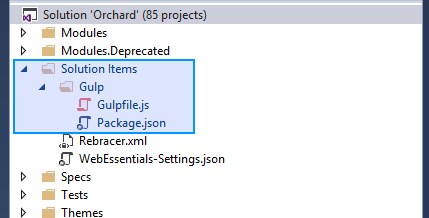
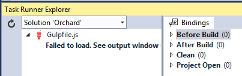
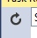
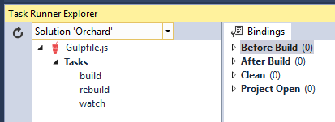

处理客户端资产-Processing Client-Side Assets
Orchard includes a processing pipeline for client-side assets (typically scripts and stylesheets) which is used to perform front-end development workflow tasks such as transpilation, minification and bundling of client-side assets in both core projects and extensions (i.e. modules and themes). Many of the built-in modules and themes in Orchard use this pipeline to process client-side assets, and you can enable your own extensions to use it as well.
Orchard包含用于客户端资产（通常是脚本和样式表）的处理管道，用于执行前端开发工作流任务，例如核心项目和扩展（即模块和主题）中的客户端资产的转换，缩小和捆绑）。 Orchard中的许多内置模块和主题使用此管道来处理客户端资产，您也可以启用自己的扩展来使用它。
Overview
概观
The client-side asset pipeline is powered by Gulp, a popular open-source task runner based on Node.js that can be used to automate a wide variety of tasks in a development workflow. The pipeline defines a set of Gulp tasks that can be executed by Gulp using either the command line or using the Task Runner Explorer tool window in Visual Studio 2015 or later.
客户端资产管道由[Gulp]（http://gulpjs.com）提供支持，这是一个基于[Node.js]（https://nodejs.org）的流行开源任务运行器，可用于在开发工作流程中自动执行各种任务。管道定义了一组Gulp 任务，可以使用命令行或使用Visual Studio 2015或更高版本中的 Task Runner Explorer 工具窗口由Gulp执行。
Physically, the client-side asset pipeline consists of two files in the Orchard solution folder:
物理上，客户端资产管道包含Orchard解决方案文件夹中的两个文件：
-
src/Package.jsoncontains information about the Node packages required by the pipeline. This file tells the Node package manager (NPM) which packages it needs to download and install for the pipeline to function. -
src / Package.json包含有关管道所需的Node包的信息。该文件告诉Node包管理器（NPM）它需要下载和安装哪些包以使管道正常运行。 -
src/Gulpfile.jscontains JavaScript code that defines a set of Gulp tasks and their implementation logic. -
src / Gulpfile.js包含定义一组Gulp任务及其实现逻辑的JavaScript代码。
In Visual Studio you will find these files in Solution Explorer in a solution folder named Solution Items/Gulp:
在Visual Studio中，您将在名为“Solution Items / Gulp”的解决方案文件夹中的 Solution Explorer 中找到这些文件：

There are several reasons why the pipeline has been implemented at the solution level rather than in each extension that needs to process client-side assets.
管道已在解决方案级别实施，而不是在需要处理客户端资产的每个扩展中，有几个原因。
-
Current and future can share the existing pipeline logic instead of having to reinvent it.
-
当前和未来可以共享现有的管道逻辑，而不必重新发明它。 *
-
Only one copy of the necessary Node.js packages needs to be downloaded and stored alongside the codebase.
-
只需要下载一个必需的Node.js软件包副本并将其存储在代码库旁边。 *
-
Keeping Node package folders (
node_modules) anywhere inside theOrchard.Webproject causes their contents to be included when publishing Orchard for deployment which would increase the size of the deployment package by orders of magnitude even though these files are only useful at development time. -
在Orchard.Web
项目中的任何位置保留节点包文件夹（node_modules`）会导致在发布Orchard进行部署时包含其内容，这会使部署包的大小增加几个数量级，即使这些文件仅在开发时间。 *
The client-side asset pipeline is not configured by default to be invoked automatically when opening or building Orchard. To minimize build time and make it as easy as possible to get started with Orchard, all built-in modules and themes in Orchard are kept in source control with their processed output files included. This means you don't have to activate and run the client-side asset pipeline to build or run Orchard out of the box. You only need to run the client-side asset pipeline if you make changes to these assets, or wish to use it to process assets in your own extensions.
默认情况下，客户端资产管道未配置为在打开或构建Orchard时自动调用。为了最大限度地缩短构建时间并使Orchard开始变得简单，Orchard中的所有内置模块和主题都保存在源代码管理中，其中包含已处理的输出文件。这意味着您不必激活并运行客户端资产管道即可构建或运行Orchard。如果您对这些资产进行了更改，或者希望使用它来处理您自己的扩展中的资产，则只需运行客户端资产管道。
Getting started
入门
Installing prerequisites
安装先决条件
The client-side asset pipeline requires Node.js to be installed. If you are using Visual Studio 2015 or later, Node.js is typically already installed as part of Visual Studio. If you are not using Visual Studio, or if you selected not to include Node.js when installing Visual Studio, you will need to install Node.js manually from https://nodejs.org.
客户端资产管道需要安装Node.js.如果您使用的是Visual Studio 2015或更高版本，则Node.js通常已作为Visual Studio的一部分安装。如果您没有使用Visual Studio，或者在安装Visual Studio时选择不包含Node.js，则需要从https://nodejs.org手动安装Node.js.
Next you will need to use NPM to install all the packages the client-side asset pipeline needs, including Gulp itself. Using the command line, navigate to the Orchard solution folder and execute the command npm install, which will install all dependencies referenced in the Package.jsonfile. In Visual Studio 2015 or later, you can instead simply open the Package.json file and save it without making any changes - this will trigger an automatic npm install behind the scenes.
接下来，您将需要使用NPM来安装客户端资产管道所需的所有软件包，包括Gulp本身。使用命令行，导航到Orchard解决方案文件夹并执行命令npm install，它将安装Package.json文件中引用的所有依赖项。在Visual Studio 2015或更高版本中，您只需打开Package.json文件并保存它而不进行任何更改 - 这将在后台触发自动npm install。
Executing tasks
执行任务
There are three different Gulp tasks that you can invoke to execute the pipeline in different ways.
您可以调用三种不同的Gulp任务以不同方式执行管道。
-
build performs an incremental build of all asset groups in the solution; asset groups whose outputs are already newer than all their inputs are not processed.
-
build 执行解决方案中所有资产组的增量构建;不处理其输出已经比其所有输入更新的资产组。
-
rebuild performs an unconditional full build of all asset groups in the solution, even if their outputs are already newer than their inputs.
-
rebuild 在解决方案中执行所有资产组的无条件完整构建，即使它们的输出已经比输入更新。
-
watch monitors all asset groups in the solution for changes to their inputs, and rebuilds an asset group if one or more of its inputs are modified.
-
watch 监控解决方案中的所有资产组以更改其输入，并在修改其一个或多个输入时重建资产组。
Note: These tasks also take the asset manifest files themselves into consideration when evaluating changes; a modification to the asset manifest file (Assets.json) is treated the same as a modification to one of the input asset files declared in the manifest.
注意：在评估更改时，这些任务还会考虑资产清单文件本身;对资产清单文件（Assets.json）的修改与对清单中声明的输入资产文件之一的修改相同。
The way you typically execute the Gulp tasks depends on whether you are using Visual Studio or not.
通常执行Gulp任务的方式取决于您是否使用Visual Studio。
Using the command line
使用命令行
- Make sure you have Node.js installed and added to your
PATHvarable.
1.确保安装了Node.js并将其添加到PATH varable中。
- Make sure you have installed all the required Node.js packages using the
npm installcommand as described above.
2.确保已使用npm install命令安装了所有必需的Node.js软件包，如上所述。
- Navigate to the Orchard solution folder where the file
Gulpfile.jsis located.
3.导航到文件“Gulpfile.js”所在的Orchard解决方案文件夹。
- Execute one of the commands
gulp build,gulp rebuildandgulp watchto execute the corresponding Gulp task.
4.执行一个命令gulp build，gulp rebuild和gulp watch来执行相应的Gulp任务。
Using Visual Studio
使用Visual Studio
Visual Studio 2015 and later comes with a built-in tool window named Task Runner Explorer that can be used to execute NPM tasks as well as tasks from different task runners such as Gulp and Grunt among others.
Visual Studio 2015及更高版本附带了一个名为 Task Runner Explorer 的内置工具窗口，可用于执行NPM任务以及来自不同任务运行程序（如Gulp和Grunt等）的任务。
To open Task Runner Explorer, select View -> Other Windows -> Task Runner Explorer from the menu. Alternatively, you can right-click on the file Gulpfile.js in Solution Explorer and select Task Runner Explorer from there.
要打开Task Runner Explorer，请从菜单中选择 View - > Other Windows - > Task Runner Explorer 。或者，您可以在解决方案资源管理器中右键单击文件Gulpfile.js，然后从那里选择 Task Runner Explorer 。
Initially you may see an error message in Task Runner Explorer:
最初，您可能会在Task Runner Explorer中看到错误消息：

This can happen if you have not installed the necessary dependency packages (see the section on installing prerequisites above) or if you have recently installed dependency packages and Task Runner Explorer has not yet retried the parsing of the Gulp file after that. Once you have installed all the dependency packages, just click the refresh icon and wait for it to reload:
如果您尚未安装必要的依赖包（请参阅上面有关安装先决条件的部分），或者您最近安装了依赖包，并且任务运行器资源管理器尚未在此之后重试解析Gulp文件，则会发生这种情况。安装完所有依赖包后，只需单击刷新图标并等待它重新加载：

When Task Runner Explorer has correctly parsed the Gulp file you will see the list of tasks contained inside it:
当Task Runner Explorer正确解析Gulp文件时，您将看到其中包含的任务列表：

You can now double-click one of the tasks to execute it.
您现在可以双击其中一个任务来执行它。
Binding tasks to Visual Studio events
将任务绑定到Visual Studio事件
Task Runner Explorer also has the ability to "bind" tasks to be executed automatically in response to Visual Studio solution events. Orchard is not preconfigured with any such bindings because all assets in the original code base are already processed and their outputs are included in source control, but it can be useful to configure these bindings temporarily while developing your own client-side assets or while working on modifications to the ones in Orchard.
Task Runner Explorer还能够“绑定”要自动执行的任务以响应Visual Studio解决方案事件。 Orchard没有预先配置任何此类绑定，因为原始代码库中的所有资产都已处理，其输出包含在源代码管理中，但在开发自己的客户端资产或处理时，临时配置这些绑定会很有用修改乌节的那些。
The most common scenario is to bind the build task to the After Build solution event. This way, each time you build Orchard (for example, by hitting F5 or Ctrl+F5 or selecting Build -> Build Solution from the menu) the asset pipeline's build task will be executed at the end of the build process. Any asset groups whose input files have changed since the last build will be refreshed.
最常见的情况是将 build 任务绑定到 After Build 解决方案事件。这样，每次构建Orchard时（例如，通过点击F5或Ctrl + F5或从菜单中选择 Build - > Build Solution ），将执行资产管道的 build 任务在构建过程结束时。自上次构建以来输入文件已更改的任何资产组都将刷新。
To configure this binding, follow these steps:
要配置此绑定，请按照下列步骤操作：
- Right click on the
buildtask
1.右键单击build任务
- Select Bindings
2.选择 Bindings
- Select After Build
3.选择 After Build
Another common scenario is binding the watch task to the Project Open solution event, which will start the watch task when the solution is loaded and keep it running until you terminate it.
另一个常见的情况是将 watch 任务绑定到 Project Open 解决方案事件，该事件将在加载解决方案时启动 watch 任务并保持运行直到您终止它。
Note: It's important to be aware that task bindings are stored in a specially formatted comment in the beginning of the Gulp file, so when you configure task bindings you are effectively making a change to one of the core files belonging to the Orchard code base which may be overwritten if you later choose to update your code base to a newer version of Orchard.
注意：重要的是要注意任务绑定存储在Gulp文件开头的特殊格式的注释中，因此当您配置任务绑定时，您实际上是对属于Orchard代码库的核心文件之一进行更改。如果您稍后选择将代码库更新为较新版本的Orchard，则可能会被覆盖。
Using the pipeline for your own module or theme
将管道用于您自己的模块或主题
You typically don't have to execute any of the tasks in the client-side asset pipeline unless you are either making changes to Orchard itself or creating your own custom extensions and wish to utilize the pipeline to process your own client-side assets. This section explains how to enable the pipeline for your own extension.
您通常不必执行客户端资产管道中的任何任务，除非您要么对Orchard本身进行更改，要么创建自己的自定义扩展并希望利用管道来处理您自己的客户端资产。本节介绍如何为您自己的扩展启用管道。
Adding an asset manifest file
添加资产清单文件
The first step is to add an asset manifest file to your extension. This asset manifest file is a simple JSON document that declares one or more asset groups to be processed by the pipeline. Each asset group specifies a set of input files in your extension (such as .less, .scss, .css, .ts or .js files) along with an output file and (optionally) one or more options to influence the processing.
第一步是向您的扩展程序添加资产清单文件。此资产清单文件是一个简单的JSON文档，它声明要由管道处理的一个或多个资产组。每个资产组在您的扩展中指定一组输入文件（例如.less，.scss，。。css，.ts或.js文件）以及输出文件和（可选地）影响处理的一个或多个选项。
To add an asset manifest, add a new JSON file named Assets.json to the root folder of your extension (both the name and location of the file are mandatory. The client-side asset pipeline will detect and parse this file, and add the asset groups declared inside it for processing when of the pipeline tasks are executed.
要添加资产清单，请将名为Assets.json的新JSON文件添加到扩展的根文件夹中（文件的名称和位置都是必需的。客户端资产管道将检测并解析此文件，并且添加在其中声明的资产组，以便在执行管道任务时进行处理。
The basic structure of the asset manifest looks like this:
资产清单的基本结构如下所示：
[
<font color=#0099ff size=4 face="黑体">[</font>
{
// First asset group
"inputs": [
"some/input/file.less",
"some/input/file2.less"
],
"output": "some/output/file.css"
// Options can be added here
},
{
// Repeat for more asset groups
}
]
<font color=#0099ff size=4 face="黑体">]</font>
All input and output paths are relative to the extension root folder. However they do not have to reside within the extension folder; using ../ to resolve paths outside of the extension folder is fully supported. It is a common convention in Orchard to use a folder named Assets to contain input asset files and to keep those separate from the output asset files, but this is not required.
所有输入和输出路径都相对于扩展根文件夹。但是，它们不必位于扩展文件夹中;完全支持使用../来解析扩展文件夹之外的路径。在Orchard中，使用名为“Assets”的文件夹来包含输入资产文件并将它们与输出资产文件分开是一种常见的约定，但这不是必需的。
Using the asset pipeline is completely optional. If you don't add an Asset.json manifest file in the root folder of your extension, the client-side asset pipeline will simply ignore your extension.
使用资产管道是完全可选的。如果您没有在扩展的根文件夹中添加Asset.json清单文件，则客户端资产管道将忽略您的扩展名。
Basic example (single input file)
基本示例（单输入文件）
The following example takes the LESS stylesheet Assets/Styles.less in your extension and transpiles it into the output file Styles/Styles.css:
下面的示例在您的扩展中使用LESS样式表Assets / Styles.less并将其转换为输出文件Styles / Styles.css：
[
<font color=#0099ff size=4 face="黑体">[</font>
{
"inputs": [
"Assets/Styles.less"
],
"output": "Styles/Styles.css"
}
]
<font color=#0099ff size=4 face="黑体">]</font>
When executing the build or rebuild task, the asset pipeline will perform the following tasks on Styles.less:
执行 build 或 rebuild 任务时，资产管道将在Styles.less上执行以下任务：
-
Transpile LESS to plain CSS
-
透明少到纯CSS
-
Add/remove vendor prefixes as necessary
-
根据需要添加/删除供应商前缀
-
Add source maps (non-minified output only)
-
添加源地图（仅限非缩小输出）
-
Add a static informational header (non-minified output only)
-
添加静态信息标头（仅限非缩小输出）
-
Normalize line ending characters
-
规范化行结束字符
-
Minify
-
缩小
After the build task has executed your extension's Styles folder will contain two files:
build 任务执行完后，你的扩展名Styles文件夹将包含两个文件：
-
Styles.css(non-minified with inline source maps) -
Styles.css（未使用内联源映射缩小） * -
Styles.min.css(minified) -
Styles.min.css（缩小） *
Once these output asset files have been generated you can reference them from Razor views just as you normally wolud using the Orchard resource manager, either by declaring them in a resource manifest class and requiring them using one of the Require() methods or by including them by path using one of the Include() methods.
一旦生成了这些输出资产文件，就可以像使用Orchard资源管理器那样通过Razor视图引用它们，方法是在资源清单类中声明它们并要求它们使用Require（）方法之一或者通过使用Include（）方法之一通过路径包含它们。
Note: The generated output asset files will not be automatically added to your extension project (.csproj) file. If you wish to keep the output asset files in source control, you will need to manually include them in your project using Solution Explorer after they have been generated for the first time. See the section on advanced scenarios below for some pointers on when you may or may not want to do this.
注意：生成的输出资产文件不会自动添加到扩展项目（.csproj）文件中。如果您希望将输出资产文件保留在源代码管理中，则需要在首次生成它们之后使用解决方案资源管理器将它们手动包含在项目中。请参阅下面有关高级方案的部分，以获取有关何时可能或可能不想执行此操作的一些指示。
Multiple input files
多个输入文件
You can also specify multiple inputs in the same asset group:
您还可以在同一资产组中指定多个输入：
[
<font color=#0099ff size=4 face="黑体">[</font>
{
"inputs": [
"Assets/Grid.less",
"Assets/Forms.less",
"Assets/Type.less",
],
"output": "Styles/Styles.css"
}
]
<font color=#0099ff size=4 face="黑体">]</font>
This works exactly like the basic example above with the single input, with the addition that all three inputs will be bundled into the output files Styles.css and Styles.min.css.
这与上面的单个输入的基本示例完全相同，另外所有三个输入都将捆绑到输出文件Styles.css和Styles.min.css中。
Globs (wildcards)
Globs（通配符）
The client-side asset pipeline also supports using glob wildcard patterns to include multiple input assets without having to specify each one individually.
客户端资产管道还支持使用[glob通配符模式]（https://www.npmjs.com/package/glob#glob-primer）来包含多个输入资产，而无需单独指定每个输入资产。
The following example processes all files with a .js extension in the Assets folder and all its subfolders, and bundles them into a single Scripts/Scripts.js output file:
下面的示例处理Assets文件夹及其所有子文件夹中带有.js扩展名的所有文件，并将它们捆绑到一个Scripts / Scripts.js输出文件中：
[
<font color=#0099ff size=4 face="黑体">[</font>
{
"inputs": [
"Assets/**/*.js" // Include all .js files anywhere in or underneath the Assets folder
],
"output": "Scripts/Scripts.js"
}
]
<font color=#0099ff size=4 face="黑体">]</font>
Separate output files for each input file
为每个输入文件分隔输出文件
In many cases you will want to process many input files in the exact same way but keep them in separate output files. You could do this by declaring a separate asset group for each pair of input/output files. However this can be extremely tedious and error prone to write, and even more so to maintain over time as you add or remove assets to your extention, especially if you have a large number of asset files.
在许多情况下，您将希望以完全相同的方式处理许多输入文件，但将它们保存在单独的输出文件中。您可以通过为每对输入/输出文件声明一个单独的资产组来完成此操作。但是，这可能非常繁琐且易于编写，甚至在您为扩展添加或删除资产时保持更长时间，尤其是在您拥有大量资产文件时。
The pipeline makes this easier by allowing you to use the @ characted instead of a file name the output file path of your asset group. The @ character disables the bundling step and basically translates to "the same filename as whatever input asset file is currently being processed". When combined with glob wildcards this can make it a lot easier to manage your assets:
通过允许您使用@ characted而不是文件名作为资产组的输出文件路径，管道使这变得更容易。 @字符禁用捆绑步骤，基本上转换为“与当前正在处理的任何输入资产文件相同的文件名”。与glob通配符结合使用时，可以更轻松地管理资产：
[
<font color=#0099ff size=4 face="黑体">[</font>
{
"inputs": [
"Assets/Moment/Localizations/*.ts"
],
"output": "Scripts/Localizations/@.js"
}
]
<font color=#0099ff size=4 face="黑体">]</font>
In this example, all TypeScript files in the Assets/Moment/Localizations are processed and each generated into a separate .js file with the same name in the Scripts/Localizations folder. For example, assuming the Assets/Moment/Localizations folder contains en-GB.ts, fr-FR.ts and sv-SE.ts, then the output Scripts/Localizations folder would contain the resulting files en-GB.js, en-GB.min.js, fr-FR.js, fr-FR.min.js, sv-SE.js and sv-SE.min.js. If localization files are added or removed over time, the asset group is implicitly redefined accordingly.
在此示例中，处理“Assets / Moment / Localizations”中的所有TypeScript文件，并将每个文件生成为Scripts / Localizations文件夹中具有相同名称的单独.js文件。例如，假设Assets / Moment / Localizations文件夹包含en-GB.ts，fr-FR.ts和sv-SE.ts，那么输出Scripts / Localizations文件夹将包含生成的文件en-GB.js，en-GB.min.js，fr-FR.js，fr-FR.min.js，sv-SE.js和sv-SE .min.js。如果随时间添加或删除本地化文件，则会相应地隐式重新定义资产组。
Multiple asset groups
多个资产组
You can define multiple asset groups in the same asset manifest, as in the following example:
您可以在同一资产清单中定义多个资产组，如以下示例所示：
[
<font color=#0099ff size=4 face="黑体">[</font>
{ // First asset group
"inputs": [
"Assets/Bootstrap/Bootstrap.less",
"Assets/Bootstrap/Theme.less"
],
"output": "Styles/Bootstrap.css"
},
{ // Second asset group
"inputs": [
"Assets/Styles.less"
],
"output": "Styles/Styles.css"
},
{ // Third asset group
"inputs": [
"Assets/JavaScript/Lib/**/*.js",
"Assets/JavaScript/Admin/Admin.js"
],
"output": "Scripts/Lib.js"
}
]
<font color=#0099ff size=4 face="黑体">]</font>
Adding additional files to be watched
添加要监视的其他文件
As described above, the watch task can be used to continuously monitor input asset files for changes and rebuild affected asset groups automatically for a smooth and efficient local dev/test workflow.
如上所述， watch 任务可用于连续监视输入资产文件的变化并自动重建受影响的资产组，以实现平稳有效的本地开发/测试工作流程。
In some cases you may want the watch task to monitor additional files besides those specified as input assets. In particular, this is commonly needed when using LESS/SASS imports or the TypeScript <reference> or import keywords to indirectly include files into the pipeline which were not part of the initial input specification.
在某些情况下，您可能希望 watch 任务监视除指定为输入资产的文件之外的其他文件。特别是，当使用LESS / SASS导入或TypeScript“
Let's say you have a main SCSS stylesheet that looks something like this:
假设您有一个主要的SCSS样式表，如下所示：
@import "Utils/Mixins.scss";
<font color=#0099ff size=4 face="黑体">@import“Utils / Mixins.scss”;</font>
@import "Utils/Variables.scss";
<font color=#0099ff size=4 face="黑体">@import“Utils / Variables.scss”;</font>
@import "Utils/Type.scss"
<font color=#0099ff size=4 face="黑体">@import“Utils / Type.scss”</font>
In these cases you can use the watch property in an asset group to specify an additional set of files to monitor for changes:
在这些情况下，您可以使用资产组中的watch属性来指定要监视更改的其他文件集：
[
<font color=#0099ff size=4 face="黑体">[</font>
{
"inputs": [
"Assets/Main.scss" // This one imports additional .scss files
],
"output": "Styles/Styles.css",
"watch": [
"Assets/Utils/*.scss" // Also watch these two files for changes
]
}
]
<font color=#0099ff size=4 face="黑体">]</font>
Note that glob wildcards are supported.
请注意，支持glob通配符。
Supported asset file formats
支持的资产文件格式
The client-side asset pipelines can process either stylesheet assets or script assets.
客户端资产管道可以处理样式表资产或脚本资产。
An asset group can only be used to process one of these categories, and must have a matching output asset file extension. Asset groups dealing with stylesheet assets must specify a .css output file, while asset groups dealing with script assets must specify a .js output file. An asset group can contain mixed types of input assets as long as they can be processed into the same output file type (i.e. as long as they all belong to either the stylesheet or the script family).
资产组只能用于处理其中一个类别，并且必须具有匹配的输出资产文件扩展名。处理样式表资产的资产组必须指定.css输出文件，而处理脚本资产的资产组必须指定.js输出文件。资产组可以包含混合类型的输入资产，只要它们可以处理为相同的输出文件类型（即，只要它们都属于样式表或脚本系列）。
For example you can specify both .less and .css input assets in a group targeted for a .css output file and you can specify both .ts and .js input assets in a group targeted for a .js output file, but you cannot mix and match; if you try the asset pipeline will throw an error.
例如，您可以在针对.css输出文件的组中指定.less和.css输入资产，并且可以在目标组中指定.ts和.js输入资产一个.js输出文件，但你不能混合搭配;如果您尝试资产管道将抛出错误。
Stylesheet assets
样式表资产
The following file types are supported as stylesheet input assets:
样式表输入资产支持以下文件类型：
-
LESS (
.less) -
少（
.less） * -
SASS (
.sass) -
SASS（
.sass） * -
SCSS (
.scss) -
SCSS（
.scss） * -
Plain CSS (
.css) -
纯CSS（
.css） *
The following tasks are performed on stylesheet assets:
在样式表资产上执行以下任务：
-
LESS/SASS transpilation
-
少/ SASS翻译 *
-
Vendor prefix normalization
-
供应商前缀规范化 *
-
Inline source map generation (unless disabled)
-
内联源映射生成（除非禁用） *
-
File header generation
-
文件头生成 *
-
Line ending normalization
-
行结束规范化 *
-
Bundling (unless disabled)
-
捆绑（除非禁用） *
-
Minification
-
缩小 *
Script assets
脚本资产
The following file types are supported as script input assets:
脚本输入资产支持以下文件类型：
-
TypeScript (
*.ts,*.jsx) -
TypeScript（
* .ts，* .jsx） -
Plain JavaScript (
*.js) -
普通JavaScript（
* .js）
The following tasks are performed on script assets:
对脚本资产执行以下任务：
-
TypeScript transpilation
-
TypeScript转换 *
-
Inline source map generation (unless disabled)
-
内联源映射生成（除非禁用） *
-
File header generation
-
文件头生成 *
-
Line ending normalization
-
行结束规范化 *
-
Bundling (unless disabled)
-
捆绑（除非禁用） *
-
Minification
-
缩小 *
Note: All input script assets are processed through the TypeScript transpiler, also plain JavaScript .js files. This means the asset pipeline will throw errors for obvious syntactical errors in plain JavaScript files. This should generally be considered an advantage as JavaScript errors can be caught at build time rather than at runtime.
注意：所有输入脚本资产都通过TypeScript转换器处理，也可以是纯JavaScript.js文件。这意味着资产管道将为普通JavaScript文件中的明显语法错误抛出错误。这通常应被视为一个优点，因为JavaScript错误可以在构建时而不是在运行时捕获。
Supported options
支持的选项
The following is an exhaustive list of all possible properties that can be specified in an asset group in the asset manifest file.
以下是可以在资产清单文件中的资产组中指定的所有可能属性的详尽列表。
inputs (required)
输入（必填）
An array of input files to include in the asset group. Paths are relative to the asset manifest file. Glob wildcards are supported. Single entries must be wrapped in an array.
要包含在资产组中的输入文件数组。路径相对于资产清单文件。支持Glob通配符。单个条目必须包装在一个数组中。
output (required)
output（必填）
The output file to be generated by the asset group. The path is relative to the asset manifest file. All inputs will be bundled into the specified output file unless @ is specified as the base filename, eg Scripts/@.css, to skip bundling. A minified version with a .min suffix will be automatically generated also.
资产组生成的输出文件。该路径相对于资产清单文件。所有输入都将捆绑到指定的输出文件中，除非将@指定为基本文件名，例如Scripts / @。css，以跳过捆绑。还会自动生成带有.min`后缀的缩小版本。
watch
watch
An array of additional files to be monitored for changes. Paths are relative to the asset manifest file. Glob wildcards are supported. Single entries must be wrapped in an array.
要监视更改的一组其他文件。路径相对于资产清单文件。支持Glob通配符。单个条目必须包装在一个数组中。
generateSourceMaps
generateSourceMaps
true to emit inline source maps into non-minified output files, false to disable source maps. Default is true.
flatten
flatten
By default, when using a glob to specify input assets and using the @ character in the output file path to bypass bundling, output files are generated in the same relative location as their corresponding input assets relative to the first glob in the input pattern. For example, assuming you have the following input assets:
默认情况下，当使用glob指定输入资源并使用输出文件路径中的@字符绕过捆绑时，输出文件生成的输出文件位于相对于输入模式中第一个glob的相应输入资源的相同位置。例如，假设您有以下输入资产：
-
Assets/Pages/PageStyles.less -
资产/页/ PageStyles.less* -
Assets/Widgets/LoginWidget/Login.less -
资产/小工具/ LoginWidget / Login.less*
Given the following asset group definition:
给定以下资产组定义：
[
<font color=#0099ff size=4 face="黑体">[</font>
{
"inputs": [ "Assets/**/*.less" ],
"output": "Styles/@.css"
}
]
<font color=#0099ff size=4 face="黑体">]</font>
The default behavior of the asset pipeline would generate the following output files:
资产管道的默认行为将生成以下输出文件：
-
Styles/Pages/PageStyles.css -
风格/页/ PageStyles.css* -
Styles/Pages/PageStyles.min.css -
风格/页/ PageStyles.min.css* -
Styles/Widgets/LoginWidget/Login.css -
风格/小工具/ LoginWidget / Login.css* -
Styles/Widgets/LoginWidget/Login.min.css -
风格/小工具/ LoginWidget / Login.min.css*
This may not always be the desired behavior. The flatten property can be set to true to have the asset pipeline flatten the output folder structure and disregard the relative locations of the input asset files. In this case, setting flatten to true would instead produce the following two output files:
这可能并不总是理想的行为。可以将flatten属性设置为true，以使资产管道展平输出文件夹结构，并忽略输入资产文件的相对位置。在这种情况下，将flatten设置为true会产生以下两个输出文件：
-
Styles/PageStyles.css -
风格/ PageStyles.css* -
Styles/PageStyles.min.css -
风格/ PageStyles.min.css* -
Styles/Login.css -
风格/ Login.css* -
Styles/Login.min.css -
风格/ Login.min.css*
separateMinified
separateMinified
By default, minified output files are generated alongside their non-minified siblings with a .min filename extension:
默认情况下，缩小的输出文件与非缩小的兄弟姐妹一起生成，文件扩展名为.min：
-
Styles/SomeStyles.css -
风格/ SomeStyles.css* -
Styles/SomeStyles.min.css -
风格/ SomeStyles.min.css*
In some cases, such as when using a runtime module loader, it can be useful to place minified output files in a subfolder instead of suffixing their filenames. This allows you to simply configure a different base path for the module loader depending on execution mode (i.e. debug vs. release) rather than having to declare every resource differently. Setting the separateMinified option property to true will result in the following alternative output structure:
在某些情况下，例如使用运行时模块加载器时，将缩小的输出文件放在子文件夹中而不是为其文件名添加后缀可能很有用。这允许您根据执行模式（即调试与发布）简单地为模块加载器配置不同的基本路径，而不必以不同方式声明每个资源。将separateMinified选项属性设置为true将导致以下替代输出结构：
-
Styles/SomeStyles.css -
风格/ SomeStyles.css* -
Styles/min/SomeStyles.css -
样式/分钟/ SomeStyles.css*
typeScriptOptions
typeScriptOptions
Any options you wish to pass through to the TypeScript transpiler (only applicable for script asset groups). The following default values are specified by the asset pipeline unless overridden in this property:
您希望传递给TypeScript转换器的任何选项（仅适用于脚本资产组）。除非在此属性中覆盖，否则资产管道指定以下默认值：
{
<font color=#0099ff size=4 face="黑体">{</font>
allowJs: true,
noImplicitAny: true,
noEmitOnError: true
}
<font color=#0099ff size=4 face="黑体">}</font>
Advanced scenarios
高级方案
Excluding output files from source control
从源代码管理中排除输出文件
When developing an extension intended for redistribution and used by third parties, it is recommended that generated output files be added to .csproj files of the containing extension and included in source control. All the built-in projects in the Orchard code base employ this methods. This is so that consumers can use your extension without having to install Node.js and execute the Gulp tasks in the client-side asset pipeline to generate the needed output asset files first.
在开发用于重新分发并由第三方使用的扩展时，建议将生成的输出文件添加到包含扩展名的“.csproj”文件中，并包含在源代码管理中。 Orchard代码库中的所有内置项目都采用这种方法。这样消费者可以使用您的扩展，而无需安装Node.js并在客户端资产管道中执行Gulp任务，以首先生成所需的输出资产文件。
However, when developing an extension for internal use you may also consider the alternative approach of leaving generated output files out of both .csproj files and source control and rely on them being rebuilt by the client-side asset pipeline whenever needed. This is similar to how you often assume that the NuGet package manager will be used to restore NuGet package references before a project is built.
但是，在开发内部使用的扩展时，您还可以考虑将生成的输出文件从.csproj文件和源代码控制中分离出来的替代方法，并依赖它们在需要时由客户端资产管道重建。这类似于您经常假设NuGet包管理器将用于在构建项目之前恢复NuGet包引用。
This approach has a couple of advantages:
这种方法有几个优点：
-
Smaller version control footprint
-
较小的版本控制足迹 *
-
No risk of inconsistent/stale output assets due to forgetting to rebuild them or commit their changes to version control
-
由于忘记重建或将更改提交到版本控制而没有不一致/陈旧输出资产的风险 *
When using this approach, the Styles and Scripts folders in your extension will always remain empty in Solution Explorer although they will contain the output files on disk, and you will typically configure a Gulp task binding to ensure that client-side assets are always built when the solution is built in Visual Studio. If using an automated build system you will also typically add a step to your build script to ensure the build or rebuild task is executed as part of the build.
使用此方法时，扩展中的“样式”和“脚本”文件夹在解决方案资源管理器中始终保持为空，尽管它们将包含磁盘上的输出文件，您通常会配置Gulp任务绑定以确保客户端资产在Visual Studio中构建解决方案时始终构建。如果使用自动构建系统，您通常还会在构建脚本中添加一个步骤，以确保 build 或 rebuild 任务作为构建的一部分执行。
Including custom extension folders
包括自定义扩展文件夹
Version 1.10 of Orchard introduced the ability to load extensions from other folders besides the Orchard.Web/Modules and Orchard.Web/Themes folders. If your extension is stored and loaded from such a custom location, the client-side asset pipeline will not automatically detect your asset manifest. This is because, by default, it only looks for Assets.json files in folders under these locations:
Orchard 1.10版引入了从“Orchard.Web / Modules”和“Orchard.Web / Themes”文件夹之外的其他文件夹加载扩展的功能。如果您的扩展程序是从这样的自定义位置存储和加载的，则客户端资产管道将不会自动检测您的资产清单。这是因为，默认情况下，它只在这些位置下的文件夹中查找Assets.json文件：
-
Orchard.Web/Core/ -
Orchard.Web /核心/* -
Orchard.Web/Modules/ -
Orchard.Web /模块/* -
Orchard.Web/Themes/ -
Orchard.Web /主题/*
To add your custom location to be scanned for asset manifests, follow these steps:
要添加要扫描资产清单的自定义位置，请按以下步骤操作：
- Open the file
src/Gulpfile.jsin Visual Studio or any other text editor.
1.在Visual Studio或任何其他文本编辑器中打开文件src / Gulpfile.js。
- Find the
getAssetGroups()function.
2.找到getAssetGroups（）函数。
- This function declares an
assetManifestPathsarray variable. You can add your own glob here and merge the resulting arrays. For example:
这个函数声明了一个assetManifestPaths数组变量。您可以在此处添加自己的glob并合并生成的数组。例如：
var assetManifestPaths = glob.sync("Orchard.Web/{Core,Modules,Themes}/*/Assets.json");
<font color=#0099ff size=4 face="黑体">var assetManifestPaths = glob.sync（“Orchard.Web / {Core，Modules，Themes} / * / Assets.json”）;</font>
var customThemePaths = glob.sync("AnotherLocation/MyCompanyThemes/*/Assets.json"); // Custom location!
<font color=#0099ff size=4 face="黑体">var customThemePaths = glob.sync（“AnotherLocation / MyCompanyThemes / * / Assets.json”）; //自定义位置！</font>
assetManifestPaths = assetManifestPaths.concat(customThemePaths);
<font color=#0099ff size=4 face="黑体">assetManifestPaths = assetManifestPaths.concat（customThemePaths）;</font>
- Save and close the file.
4.保存并关闭文件。
<font color=#0099ff size=4 face="黑体"></font>
The Orchard development team is investigating ways to automate this process.
Orchard开发团队正在研究自动化此过程的方法。
Evolution of the client-side asset pipeline
客户端资产管道的演变
For those interested in the history behind the client-side asset pipeline, you can find the initial discussion with reasons for its development and proposed solutions in issue #5450.
对于那些对客户端资产管道背后的历史感兴趣的人，您可以在[问题＃5450]（https://github.com/OrchardCMS/Orchard/issues/5450）中找到有关其开发原因和建议解决方案的初步讨论。 ）。